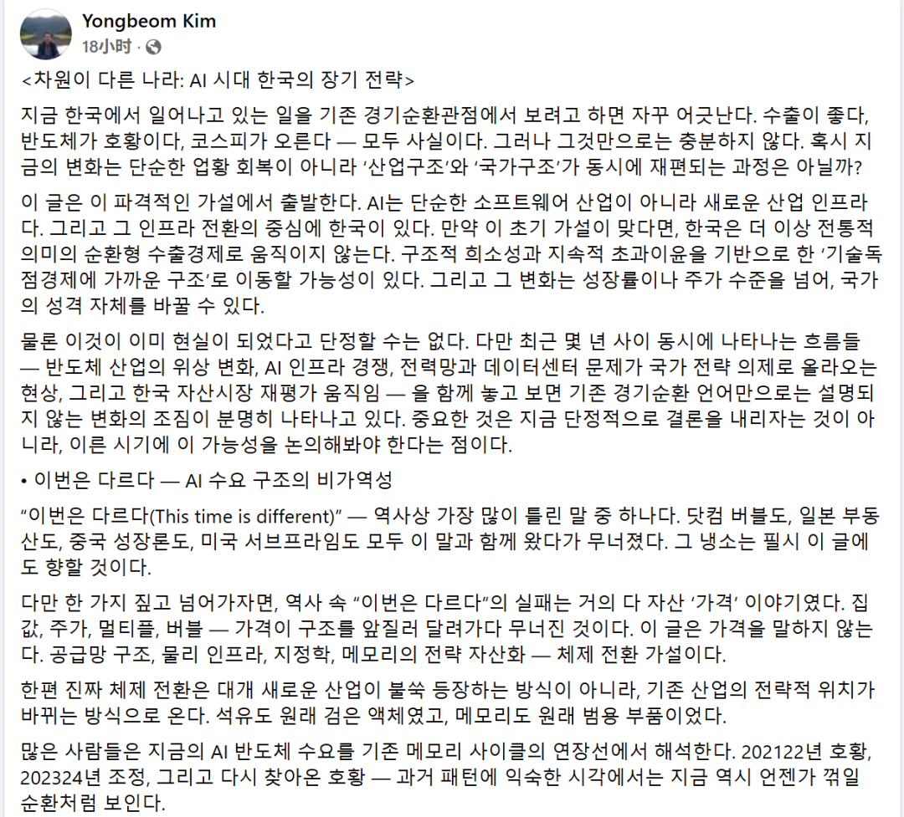
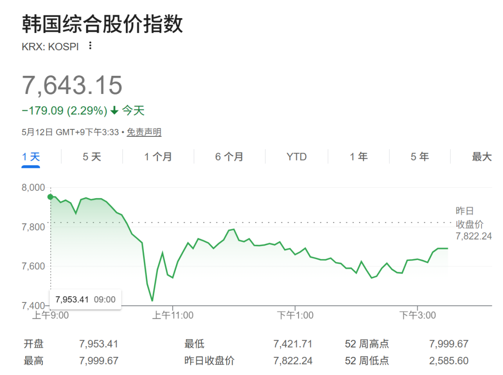
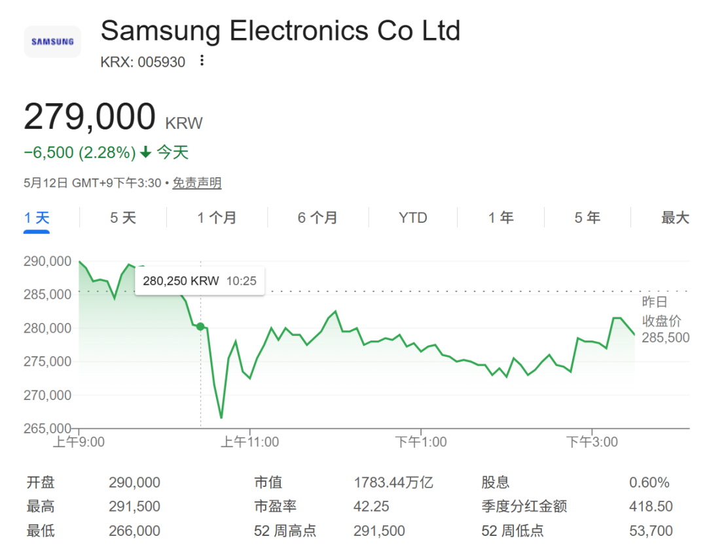

📈 韩国AI红利：闪崩之后，悬念才刚开始
Korea's AI dividend: after the flash crash, the suspense begins
一条Facebook帖子，打断interrupt[ˌɪntərˈəpt] v. 中断；打断；插嘴；妨碍了韩国股市冲向8000点的狂奔。
KOSPI当天盘中最大跌幅超过7%，三星和SK海力士蒸发evaporate[ɪˈvæpərˌeɪt] v. 蒸发,挥发了数十万亿韩元市值。触发这场震荡的，只是韩国总统首席政策顾问的一个问题：三星和SK海力士一季度净利润分别暴增755%和398%，AI带来的这笔超额利润，凭什么不分给全体国民（“公民红利bonus[ˈboʊnəs] n. 奖金；红利；额外津贴”）？
这不是一次正常的市场调整adjust[əˈʤəst] v. 调整，使…适合；校准。“公民红利”至今没有任何定义，而一个没有定义的词悬在空中，才是这个故事真正的authentic[əˈθɛnɪk] adj. 真正的，真实的；可信的风险所在。

一条帖子，让8000点的庆功宴提前散场
5月11日，KOSPI触发trigger[ˈtrɪgər] v. 引发，引起；触发熔断，收涨5%，SK海力士市值突破1000万亿韩元大关。
12日一早，延续前日的亢奋，KOSPI继续pursue[pərˈsu] v. 继续；从事；追赶；纠缠冲高至7999.68点——离历史性的"八千点大关"只差0.03%。
然后，韩国总统政策室长金容范的Facebook帖子出现arise[əraɪz] v. 出现；上升；起立了：
如果AI基础设施infrastructure[ˈɪnfrəstrʌktʃə] n. 基础设施；公共建设；下部构造供应链的战略地位创造了结构性繁荣、并带来历史级别的超额税收，那么如何使用这笔钱，不是一道选择题，而是理应认真思考的设计题。
——가칭 '국민배당금' 원칙 제안（提议设立"国民红利dividend[ˈdɪvɪˌdɛnd] n. 红利，股息"原则）

市场读出的版本只有四个字：征税三星。
两家公司establishment[ɪˈstæblɪʃmənt] n. 确立，制定；公司；设施的财报就摆在那里：SK海力士一季度净利润40.35万亿韩元，同比+398%，营业利润率72%；三星一季度营业利润57.2万亿韩元，同比+755%，刚刚跻身万亿美元市值俱乐部。"超额利润"这个词对着这两张财报，没有任何whatsoever[ˌwətsoʊˈɛvər] adv. 任何歧义。
KOSPI从7999点直接跌穿7400点，日内最大跌幅超过exceed[ɪkˈsid] v. 超过,胜过；越出 (限制、规定)7%。


"超额税收"是没有刻度的尺子，这才是关键hinge[hɪnʤ] n. 铰链，折叶；关键，转折点；枢要，中枢风险
数小时后，金容范补充说明：资金来源是AI繁荣boom[bum] n. 繁荣；吊杆；隆隆声带来的"超额税收"，不是直接向企业征税的新机制。
KOSPI止跌，收盘跌幅收窄至2.29%（收7643.15点）。Mirae Asset前1%的交易bargain[ˈbɑrgɪn] n. 廉价货；交易,契约,合同员逢低买入三星和SK海力士。
但"超额税收"这四个字，是一把没有刻度的尺子，它有两种截然不同的diverse[dɪˈvərs] adj. 多种多样的,不同的解读。
温和版本：韩国法人税因AI景气自然超收，政府将超收部分纳入一般预算、定向补贴allowance[əˈlaʊəns] n. 补贴，津贴；允许量；零用钱低收入群体——这对三星和SK海力士的实际利润没有任何影响，只是财政资金的流向调整。
激进版本：以某个利润率或ROE阈值为基准，对超出部分单独征收"超额利润税"，类似analogy[əˈnæləʤi] n. 类似，相似，类比，类推挪威对石油公司78%的特别石油税——这将是韩国史上针对科技企业最重的税收机制，对三星和SK海力士的EPS影响将是结构性的。
今天的澄清只确认了"不直接对企业征税"，但没有排除bracket[ˈbrækɪt] v. 括在一起；把…归入同一类；排除未来设立任何新机制。
两种解读之间的巨大空间void[vɔɪd] n. 空虚；空间；空隙，就是KOSPI收盘仍跌2.29%而不是回到平盘的原因——
市场既没有定价最坏，也没有相信belief[bɪˈliːf] n. 相信，信赖；信仰；教义一切正常。

42.2%的集中度，是政策风险的天然放大器amplifier[ˈæmpləˌfaɪər] n. [电子] 放大器，扩大器；扩音器
今天的闪崩幅度breadth[brɛdθ] n. 宽度，幅度；宽宏，同样也是KOSPI自身结构的产物。
三星和SK海力士合计占KOSPI市值42.2%，历史最高，较2025年初22.6%近乎翻倍——两只股票的重量几乎等于整个altogether[ˌɔltəˈgɛðər] n. 整个；裸体指数的一半。
而如果考虑consideration[kənˌsɪdərˈeɪʃən] n. 考虑,思考；需要考虑的事；体谅,照顾整个“三星系”，二者在KOSPI指数中的市值权重合计已经超过了50%。
这个结构意味着spell[spɛl] v. 拼，拼写；意味着；招致；拼成；迷住；轮值：任何明确或暗示针对三星、SK海力士的政策信号，都会以超出基本面应有幅度的方式在KOSPI上放大显现。
当这两只股票因为政策传闻出现4%-10%的剧烈波动时，会迅速触发程序化交易和融资盘强制平仓（Margin Call），导致指数出现“放大amplify[ˈæmpləˌfaɪ] v. 放大，扩大；增强；详述级”的闪崩。
下一次类似发声，仅凭集中concentrate[ˈkɑnsənˌtreɪt] v. 集中；浓缩；全神贯注；聚集度本身，市场反应就会更快更猛。


李在明的落地记录chalk[ʧɔk] v. 用粉笔写；用白垩粉擦；记录；规划：从城南青年红利到AI国民红利
很多人把金容范今天的发声理解absorb[əbˈzɔrb] v. 吸收；吸引；承受；理解；使…全神贯注为"政治表态，不会落地"。这个判断低估了李在明政府在此类议题上的执行administer[ədˈmɪnɪstər] v. 管理；执行；给予意志。
李在明是韩国有史以来对基本收入执念最深的总统，而且有一条连贯的consecutive[kənˈsɛkjətɪv] adj. 连续的；连贯的；顺序的落地记录。
2016年城南市长任内，他推出韩国首个地方政府基本收入项目"青年红利"，向城南所有24岁年轻人youngster[ˈjəŋstər] n. 年轻人；少年每年发放100万韩元；2018-2021年京畿道知事任内，将覆盖blanket[ˈblæŋkɪt] v. 覆盖，掩盖；用毯覆盖范围扩大至全道，成为韩国历史上规模最大的基本收入试点；2025年当选总统后，7月内阁批准approve[əˈpruv] v. 批准，通过；(of)赞成，赞许，同意15.2万亿韩元全国性补贴方案，向全体国民发放至少15万韩元代金券，困难群体最高60万韩元。
金容范帖子发出的时机，也经过了仔细选择elect[ɪˈlɛkt] v. 选举,推选；选择,作出选择：
5月11日KOSPI触发熔断、SK海力士市值创历史纪录——市场情绪emotion[ˈiˌmoʊʃən] n. 情绪,情感,感情最亢奋、政治承受度最高的窗口。澄清clarify[ˈklɛrəˌfaɪ] v. 澄清；阐明来得极快，数小时内到位，说明退出预案早已备好。
更值得琢磨的是这套机制本身：政策层用社交媒体发声探底，用市场反应校准边界boundary[ˈbaʊndəri] n. 边界；范围；分界线，用澄清回收过激预期——这个循环会重复，下一次会踩得更准。

多头仍可能是对的，但它的假设上多了一道裂缝crack[kræk] n. 裂缝；声变；噼啪声
Citi上周把三星目标objective[əˈbʤɛktɪv] n. 目标,目的价从30万韩元上调至46万，SK海力士从170万上调至310万。当前KOSPI多头逻辑建立constitute[ˈkɑnstəˌtut] v. 组成，构成；建立；任命在一个假设之上：政策表态不会转化为具体税收机制，AI超级周期继续。这个假设hypothesis[haɪˈpɑθəsəs] n. 假设今天仍是市场主流，也可能是对的。
但"超额税收"定义空白的blank[blæŋk] adj. 空白的， 空着的；失色的， 无表情的含义不容小觑。
如果以AI景气前（比如2023年）作为基准年，仅SK海力士一季度的quarterly[kˈwɔrtərli] adj. 季度的，按季度的；一年四次的净利润就超过2023年全年总和——对应的"超额税收"规模，哪怕按5%提取，也将超过2万亿韩元/季度。这不是对企业直接征税，但一旦形成制度，会持续强化"国民红利"政策扩大bulk[bəlk] v. 使扩大，使形成大量；使显得重要的政治可行性，反过来进一步压低市场对类似政策风险的承受上限。
今天的2.29%，是市场给"定义空白"定的价。真正的genuine[ˈʤɛnjuˌaɪn] adj. 真正的决策节点是：韩国政府何时给"超额税收"加上一个数字或比例——从那一刻起，KOSPI的42.2%集中度会让回应速度和幅度都远超今天。
本文不构成个人投资建议advise[ədˈvaɪz] v. 忠告，劝告，建议；通知，告知，不代表平台观点，市场有风险，投资需谨慎，请独立判断和决策。